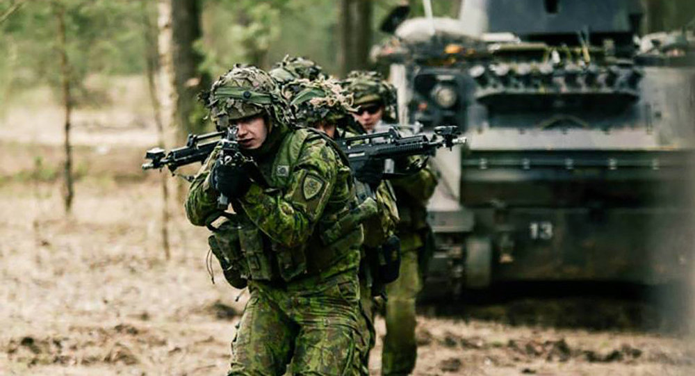
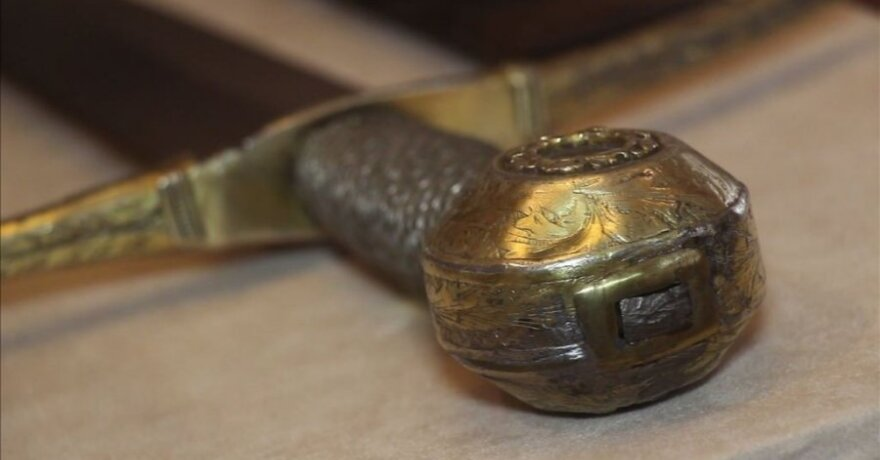
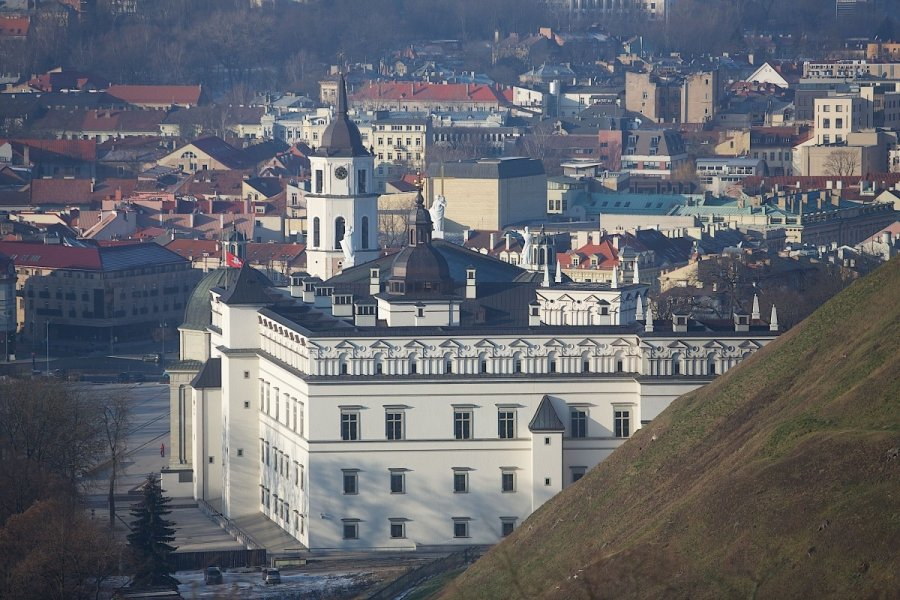

Vyksta tarptautinės SOP pratybos „Liepsnojantis kalavijas 2020“ - Atvira Klaipėda
2020.10.29 10:31
P0
Pagrindinis Parama Miestas Koronavirusas Muzikinio teatro metamorfozė Transportas Politika Švietimas Veidai Sveikata Sportas Fotoreportažai Savaitės panorama Konsultacijos Vasara Orai Draugas su uodega Kriminalai Verslas Uostas Nuomonės Spyglys Mums rašo Kultūra Tarpukario Klaipėdos kaleidoskopas Valstybingumo ženklai Klaipėdoje Kelionės laiku 30 metų be komunistinių marazmų Unikali urbanistinė istorija Klaipėdos/Mažosios Lietuvos istorija Senienų žurnalas Regionas НОВОСТИ Kontaktai Pranešk naujieną Pirmasis visiškai atviras naujienų portalas Pagrindinis Parama Miestas Koronavirusas Muzikinio teatro metamorfozė Transportas Politika Švietimas Veidai Sveikata Sportas Fotoreportažai Savaitės panorama Konsultacijos Vasara Orai Draugas su uodega Kriminalai Verslas Uostas Nuomonės Spyglys Mums rašo Kultūra Tarpukario Klaipėdos kaleidoskopas Valstybingumo ženklai Klaipėdoje Kelionės laiku 30 metų be komunistinių marazmų Unikali urbanistinė istorija Klaipėdos/Mažosios Lietuvos istorija Senienų žurnalas Regionas НОВОСТИ Kontaktai Pranešk naujieną RegionasVyksta tarptautinės SOP pratybos „Liepsnojantis kalavijas 2020“
Atvira Klaipėda
2020-09-21
Visoje Lietuvoje rugsėjo mėnesį vyksta Lietuvos kariuomenės Specialiųjų operacijų pajėgų (SOP) pratybos „Liepsnojantis kalavijas 2020“.
Jų pagrindinis tikslas – treniruoti SOP vienetus reaguoti į įvairias hibridines grėsmes, veikti priešo užnugaryje, taip pat organizuoti ir vykdyti rezistencinį pasipriešinimą, naudojant nestandartines taktines ir technines procedūras. Pratybose didelis dėmesys skiriamas NATO sąjungininkų ir partnerių bendradarbiavimo stiprinimui.
„Mūsų Specialiųjų operacijų pajėgos yra gerai pasiruošusios, veikia suderintai su sąjungininkais ir kitomis Lietuvos kariuomenės pajėgomis, taip pat ir su šalies vidaus reikalų sistemos tarnybomis. Tai patikima ir greita jėga, kurios panaudojimas šalies gynybai turi labai didelę reikšmę“, – pranešime žiniasklaidai pažymi Lietuvos kariuomenės vadas generolas leitenantas Valdemaras Rupšys.
„Veikdami kartu su sąjungininkais turime galimybę dalintis patirtimi ir įsitikinti, kad kalbame ta pačia specialiųjų operacijų kalba. Taip pat svarbu, jog užtikrinama sąveika ne tik su kitomis Lietuvos kariuomenės pajėgomis, bet ir civilinėmis organizacijomis. Be to, pratybų metu turime unikalią galimybę testuoti ir integruoti naujausias technologijas bei taktikas. Tai yra vienas išskirtinių SOP bruožų,“ – teigia ir Lietuvos kariuomenės SOP vadas pulkininkas Mindaugas Mažonas.
Didžiausiose Baltijos regione SOP pratybose taip pat dalyvauja ir visų Lietuvos kariuomenės pajėgų rūšių vienetai, įskaitant Logistikos valdybą ir Karo policiją. Kartu treniruojasi užsienio partneriai iš Čekijos, Jungtinių Amerikos Valstijų (JAV), Jungtinės Karalystės, Lenkijos, Olandijos, Suomijos ir Švedijos.
Pratybų metu su kariais glaudžiai bendradarbiauja ir kitos šalies institucijos: Valstybės saugumo departamentas, Lietuvos policija, Antiteroristinių operacijų rinktinė „Aras“, Valstybės sienos apsaugos tarnyba, Lietuvos šaulių sąjunga bei savivaldybės, kurių parama ir bendradarbiavimas yra ypač svarbūs siekiant priartinti pratybų scenarijų prie realių sąlygų.
Pranešti klaidą „Liepsnojantis kalavijas 2020 Mindaugas Mažonas Valdemaras Rupšys 2020-09-21 Akcininkams butus pastatė, o mokesčius valstybei pamiršo Trys dienos Parodų rūmuose – su garso menu ir diskusijomis apie meną
Parašykite komentarą Atšaukti atsakymą
Jums taip pat gali patikti
Naujasis Lietuvos KJP vadas – jūrų kapitonas Giedrius Premeneckas
Kariai apdovanoti ir už skęstančiųjų gelbėjimą
Kariuomenės vado vizitas Klaipėdoje
NAUJAUSI STRAIPSNIAI
Girulių draustinis: suabejota saugomos terito...2020-10-29
Planuoja atnaujinti konteinerių paskirstymą K...2020-10-29
Kaip teisingai dėvėti daugkartines kaukes?2020-10-29
Parama
Jei Jums patinka „Atviros Klaipėdos" žurnalistų rengiami straipsniai ir tikite visiškai atviros bei nepriklausomos žiniasklaidos idėja - paremkite mus, nes į VšĮ „Klaipėda atvirai" sąskaitą pervedama parama yra pagrindinis mūsų pajamų šaltinis.
ParemtiAtviri dokumentai
VšĮ „Klaipėda atvirai" kiekvieno mėnesio pradžioje skelbia, kiek per praėjusį sulaukė paramos. Taip pat - detalią atskaitą apie visas praėjusio mėnesio išlaidas.
Čia galite rasti ir portalo Etikos kodeksą bei VšĮ „Klaipėda atvirai" dalininkų sąrašą.
Su dokumentais galite susipažinti čiaInformacija
Portalas „Atvira Klaipėda” priklauso
VšĮ „Klaipėda atvirai”. Plačiau apie įstaigą ir portalą galima paskaityti čia .
Redakcijos adresas:
Bangų g. 5A (3 aukštas)
Klaipėda, LT-91250
Tel. + 370 650 77550
el. paštas: info@atviraklaipeda.lt
© 2019 Atvira Klaipėda.
Ieškoma
Šioje svetainėje naudojame slapukus (angl. „cookies“). Jie naudojami, kad suteiktume jums geriausią patirtį mūsų svetainėje. Sutinku Daugiau informacijos- Kalavijas - vertimas - Lietuvių-Anglų Žodynas - Glosbe
- Vyksta tarptautinės SOP pratybos „Liepsnojantis kalavijas ...
- kalavijas - lithuanian_language.enacademic.com
- kalavijas - išsamiai DELFI.lt
- Kalavijas - vertimai, sinonimai, gramatika, statistika ...
- Likimo kalavijas - Andrzej Sapkowski | VAGA
- Liepsnojantis kalavijas. Legenda - Lietuvos kariuomenė
- Daumanto kalavijas - Pagrindinis
- Kalavijas (schiavona) | Nacionalinis muziejus Lietuvos ...
- Sapkowski, Andrzej – Likimo kalavijas (FKB 1) – Mainyk ...
- Kalavijas - vertimas - Lietuvių-Anglų Žodynas - Glosbe
Jei aš kalavijas, tai nukaltas iš stiklo. Nes pradedu aižėti… Viena, ką Mara Barou tikrai žino – ji yra kitokia. Maros kraujas raudonas kaip prasčiokų, bet ji turi gebėjimų, būdingų kilmingiesiems sidabriniams: gali valdyti žaibą.
- Vyksta tarptautinės SOP pratybos „Liepsnojantis kalavijas ...
kalavìjas sm. (2) 1. SD41,147, MŽ, R, KlG2, [K], J.Jabl, M, NdŽ plieninis, ilgas, siauras, aštriais ašmenimis kertamasis ginklas, kardas: Žemaitis už ...
- kalavijas - lithuanian_language.enacademic.com
Kalavijas bulgariškai. Vertimas - Žodynas: dictionaries24.com. Kalbų žodynas: lietuvių » bulgarų
- kalavijas - išsamiai DELFI.lt
Kalavijas (schiavona) Venetas, Italija XVII a. I p. Geležis, oda, medis; drožyba, kalstymas Ilgis 106 cm Inv. Nr. VR-365 Eksponatą 2008 m. rugsėjo 20 d. iš Riccardo Mannino (Merkatalė in Val di Peza, Italija) būsimam Valdovų rūmų muziejui įsigijo Lietuvos dailės muziejus. 2009 m. gegužės 27 d. jis perduotas Nacionaliniam muziejui Lietuvos Didžiosios Kunigaikštystės valdovų ...
- Kalavijas - vertimai, sinonimai, gramatika, statistika ...
Likimo kalavijas . Maginės fantastikos knygų ciklo „Raganius“ autorius Andrzej Sapkowski gimė Lenkijoje 1948 m. Išgarsėjęs dar pirmu apsakymu „Raganius“, jis parašė apie raganių Geraltą tris apsakymų rinkinius ir penkis romanus, jie išversti į daugelį kalbų. 2007 m. pagal „Raganiaus“ ciklą sukurtas kompiuterinis žaidimas „The Witcher“ irgi sulaukė pasaulinės ...
- Likimo kalavijas - Andrzej Sapkowski | VAGA
Taip prieštarų sandūroje gimstantis, vertybėmis išgaląstas mąstymas ir matymas - liepsnojantis Cherubinas, mūsų kariuomenės strategijos ir lyderystės kalavijas - taps viena stipriausių, mano gyvenimui kryptį suteikiančių, jėgų, kurias užtvirtins galutinė plieno ornamentika: Trispalvė Lietuvos Ugnis.
- Liepsnojantis kalavijas. Legenda - Lietuvos kariuomenė
Kalavijas vertimo žodynas lietuvių - anglų Glosbe, žodynas, nemokamai. Peržiūrėti milions žodžius ir frazes visomis kalbomis.
- Daumanto kalavijas - Pagrindinis
Vakarų pasaulyje kalavijas vaizduojamas kaip arkangelo Mykolo ginklas. Jis taip pat yra karaliaus Dovydo ir Juditos bei Juditos, kuri kalaviju nukirto galvą Holofernui, atributas. Evangelijoje pagal Joną iš Kristaus burnos išlenda kalavijas (1, 16) kaip simbolis nenugalimos jėgos ir dangiškosios teisybės, kaip žaibas perskrodžiančios ...
- Kalavijas (schiavona) | Nacionalinis muziejus Lietuvos ...
Žodis kalavijas angliškai verčiamas - sword. Lietuvių anglų žodynas. Anglų - Lietuvių; Lietuvių - Anglų; Išversti. Žodžių indeksas: a ...
- Sapkowski, Andrzej – Likimo kalavijas (FKB 1) – Mainyk ...
Labai tikroviškas kalavijasDydis: 80 cmDerinkite su riterio karnavalo kostiumu. Puikiais tiks ir Žiedų valdovo tematikai.Nepamirškite dirbtino kraujo ir riterio vertybių, taip pat pasitreniruokite, kaip nudobti drakoną
Jei aš kalavijas, tai nukaltas iš stiklo. Nes pradedu aižėti… Viena, ką Mara Barou tikrai žino – ji yra kitokia. Maros kraujas raudonas kaip prasčiokų, bet ji turi gebėjimų, būdingų kilmingiesiems sidabriniams: gali valdyti žaibą.
kalavìjas sm. (2) 1. SD41,147, MŽ, R, KlG2, [K], J.Jabl, M, NdŽ plieninis, ilgas, siauras, aštriais ašmenimis kertamasis ginklas, kardas: Žemaitis už ...
Kalavijas bulgariškai. Vertimas - Žodynas: dictionaries24.com. Kalbų žodynas: lietuvių » bulgarų
Kalavijas (schiavona) Venetas, Italija XVII a. I p. Geležis, oda, medis; drožyba, kalstymas Ilgis 106 cm Inv. Nr. VR-365 Eksponatą 2008 m. rugsėjo 20 d. iš Riccardo Mannino (Merkatalė in Val di Peza, Italija) būsimam Valdovų rūmų muziejui įsigijo Lietuvos dailės muziejus. 2009 m. gegužės 27 d. jis perduotas Nacionaliniam muziejui Lietuvos Didžiosios Kunigaikštystės valdovų ...
Likimo kalavijas . Maginės fantastikos knygų ciklo „Raganius“ autorius Andrzej Sapkowski gimė Lenkijoje 1948 m. Išgarsėjęs dar pirmu apsakymu „Raganius“, jis parašė apie raganių Geraltą tris apsakymų rinkinius ir penkis romanus, jie išversti į daugelį kalbų. 2007 m. pagal „Raganiaus“ ciklą sukurtas kompiuterinis žaidimas „The Witcher“ irgi sulaukė pasaulinės ...
Taip prieštarų sandūroje gimstantis, vertybėmis išgaląstas mąstymas ir matymas - liepsnojantis Cherubinas, mūsų kariuomenės strategijos ir lyderystės kalavijas - taps viena stipriausių, mano gyvenimui kryptį suteikiančių, jėgų, kurias užtvirtins galutinė plieno ornamentika: Trispalvė Lietuvos Ugnis.
Kalavijas vertimo žodynas lietuvių - anglų Glosbe, žodynas, nemokamai. Peržiūrėti milions žodžius ir frazes visomis kalbomis.
Vakarų pasaulyje kalavijas vaizduojamas kaip arkangelo Mykolo ginklas. Jis taip pat yra karaliaus Dovydo ir Juditos bei Juditos, kuri kalaviju nukirto galvą Holofernui, atributas. Evangelijoje pagal Joną iš Kristaus burnos išlenda kalavijas (1, 16) kaip simbolis nenugalimos jėgos ir dangiškosios teisybės, kaip žaibas perskrodžiančios ...
Žodis kalavijas angliškai verčiamas - sword. Lietuvių anglų žodynas. Anglų - Lietuvių; Lietuvių - Anglų; Išversti. Žodžių indeksas: a ...
Labai tikroviškas kalavijasDydis: 80 cmDerinkite su riterio karnavalo kostiumu. Puikiais tiks ir Žiedų valdovo tematikai.Nepamirškite dirbtino kraujo ir riterio vertybių, taip pat pasitreniruokite, kaip nudobti drakoną
  